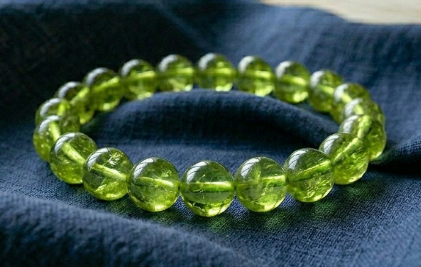

かずこ様
詳細のご希望、ありがとうございます。
かずこ様のために選んだ石について、
詳しくお伝えしますね。
かずこ様の命の流れを視させていただき、
今のかずこ様に最も必要な石を
3つ選びました。
かずこ様は、
耕された田畑のような
豊かな土を魂の奥に持つ方です。
人を育て、受け止め、
そばにいる人に
根を張らせてあげられる力があります。
でも、
家族の器が全部整ってから
ようやく自分の分を取りに行くと、
お茶はもう冷めている。
「ちょっとお願い」と言われると、
考えるより先に財布が開く。
そんな「自分の分を最後に回してしまう」感覚が
繰り返されやすい流れがあります。
2026年11月から、
その順番が少しずつ入れ替わりはじめ、
2027年に潤い、
2028年にかけて
家とお金の土台がかたちになっていく流れが
すでに動き始めています。
その流れを最大限に活かすために、
かずこ様のエネルギーと
宇迦之御魂神（うかのみたまのかみ）が
深く共鳴する3つの石を選びました。

太陽のような黄金色を宿した、
声を押し出す石です。
かずこ様の、
人を育て、暮らしを実らせてきた
土のエネルギーと
最も深く共鳴します。
夕方、湯のみのお茶が冷めかけたとき、
誰かに呼ばれて
立ち上がりそうになったとき、
「まず、私から」と
言い出すその声を
そっと支えてくれます。

宇迦之御魂神と最も共鳴が強い石です。
夏の田んぼで青々と伸びる稲を思わせる、
深い緑を宿した、
実りを育てる石です。
かずこ様の命の流れには、
家族の分を先に満たす力と、
ご自分の分がつい細くなってしまうところが
同居しています。
ペリドットは、宇迦之御魂神の守護を日常の中で
ずっとそばに置いておける石です。
「まず、私から」と言ったあとに、
肩の力が抜けて、胸が静かに落ち着いていく感覚を
そっと助けてくれます。

熟した実のような、深い赤を宿した、
ぬくもりで見守る石です。
忙しい日が続いて、
「また自分の分を後回しにしてしまった」と
ご自分を責めてしまうとき、
その自責のループを
静かにほどいてくれます。
家族を先に思うやさしさを止めるのではなく、
言えなかった日も
明日また言えるように、
やわらかな方向へ整えてくれる石です。
シトリン・ペリドット・ガーネット。
この3つをかずこ様専用に組み合わせて、
一つひとつ手作りで仕上げます。
宇迦之御魂神への祈祷と
エネルギーチャージを込めて、
かずこ様のもとへお届けします。
身につけていくうちに、
「まず、私から」と
自分の湯のみを先に満たせる日が
少しずつ増えていきます。
家族の分を整え終えて、自分のお茶が冷めているとき、
「ちょっとお願い」に、つい先に財布を開いてしまったとき。
そういう揺らぎのとき、
石が、そのループをほどくのを
静かに支えてくれます。
日常の中で、守護がそばにある。
そして2027年2月、
立春と初午を迎えて
心の余裕とお金が結ばれていく節目に、
エネルギーを整えて
迎えやすくなります。
かずこ様の場合、
守護神の月の2026年11月から、
ご自分の分を先に満たす順番が根づきはじめ、
2027年2月の立春を節目に、
冬のあいだに仕込んできたものが
かたちになっていく流れがあります。
パワーストーンのエネルギーが
しっかりと馴染むまでには、
通常2〜3週間ほどかかります。
今から始めることで、
2027年2月の立春を迎える頃には
エネルギーが馴染んだ状態で
迎えやすくなります。
- ご注文から十日以内にお送りします
- 追跡番号付きで安心
- 専用の浄化・エネルギーチャージ済みでお届けします
今回ご購入いただいた方には：
- パワーストーンの取扱い・浄化方法のご案内
- ご購入から3ヶ月間、気になることがあればいつでもご相談いただけます
ご希望の方は、下のボタンよりお進みください。
ブレスレットを希望する
※ 別ウィンドウで購入ページが開きます
お値段のことは、
どうぞ無理のない範囲で
ご自分のペースで決めてくださいね。
ご不明な点があれば、
お気軽にお尋ねくださいね。
かずこ様が、
「まず、私から」と
ご自身に許したその瞬間から、
宇迦之御魂神の守護が、
かずこ様のやさしさと根を張る力を
静かに支え始めます。
どうか、これからは
炊きたてのごはんを自分の茶碗にも先によそって
家族と笑い合う日々を
迎えてくださいね。